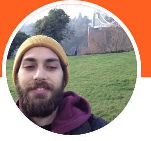

<!DOCTYPE html>
<html>
<head>
  <script src="../jspsych-6.0.5/jspsych.js"></script>
  <link rel="stylesheet" href="../jspsych-6.0.5/css/jspsych.css"></link>
  <script src="../jspsych-6.0.5/plugins/jspsych-html-button-response.js"></script>
  <script src="../jspsych-6.0.5/plugins/jspsych-image-button-response.js"></script>
  <script src="../jspsych-6.0.5/plugins/jspsych-image-keyboard-response.js"></script>
  <script src="../jspsych-6.0.5/plugins/jspsych-html-keyboard-response.js"></script>
</head>
<body></body>
<script>

var timeline = [];
var testStimuli = [];
var trial_pairs = []; 
var topImage = 'img/ger1.png'
var reps_per_trial_type = 4;

demoTrialPair = {stimulus: "" + "<br>" + "<p> + </p>"+ ""}
demoTrialPairOp = {stimulus: "" + "<br>" + "<p> + </p>"+ ""}

difDemoTrialPair = {stimulus: "" + "<br>" + "<p> + </p>"+ ""}
difDemoTrialPairOp = {stimulus: "" + "<br>" + "<p> + </p>"+ ""}
//demoTrialPair = "" + "<br>" + "<p> + </p>" + ""
//demoTrialPairOp = "" + "<br>" + "<p> + </p>" + ""

trial_pairs.push(demoTrialPair, demoTrialPairOp, difDemoTrialPair, difDemoTrialPairOp);
jsPsych.randomization.shuffle(trial_pairs);

var fixation = {
      type: 'html-keyboard-response',
      stimulus: '+',
      choices: jsPsych.NO_KEYS,
      trial_duration: 500
    };

var pairTrials = {
      type: 'image-button-response',
      //button_html: '</img>',
      choices: jsPsych.NO_KEYS,
      stimulus: trial_pairs[0].top
      //jsPsych.timelineVariable('top'), jsPsych.timelineVariable('top')
  }

  var twoImages = {
    type: 'html-keyboard-response',
    stimulus: jsPsych.timelineVariable('stimulus'),
    choices: ['y', 'h'],
    trial_duration: 4000,
    //check what the response
    on_finish: function (data) {
      var responseGiven = jsPsych.data.get().last(1).values()[0].key_press
      if (responseGiven == 89) { //89 is y, 72 is h
        console.log('pressed y')
        data.accuracy = 1
      } else {
        console.log('pressed h') 
        data.accuracy = 0
      }
    }
  }

var testProcedure = {
    timeline: [fixation, twoImages],
    timeline_variables: trial_pairs
};

var responseFeedback = {
  

}

timeline.push(testProcedure);
//timeline.push(test_procedure1, splashTrial, test_procedure2, splashTrial);

  jsPsych.init({
    timeline: timeline,
    //sample: {type: 'fixed-repetitions', size: reps_per_trial_type},
    on_finish: function() {
      jsPsych.data.displayData();
    }
  });


</script>

</html>